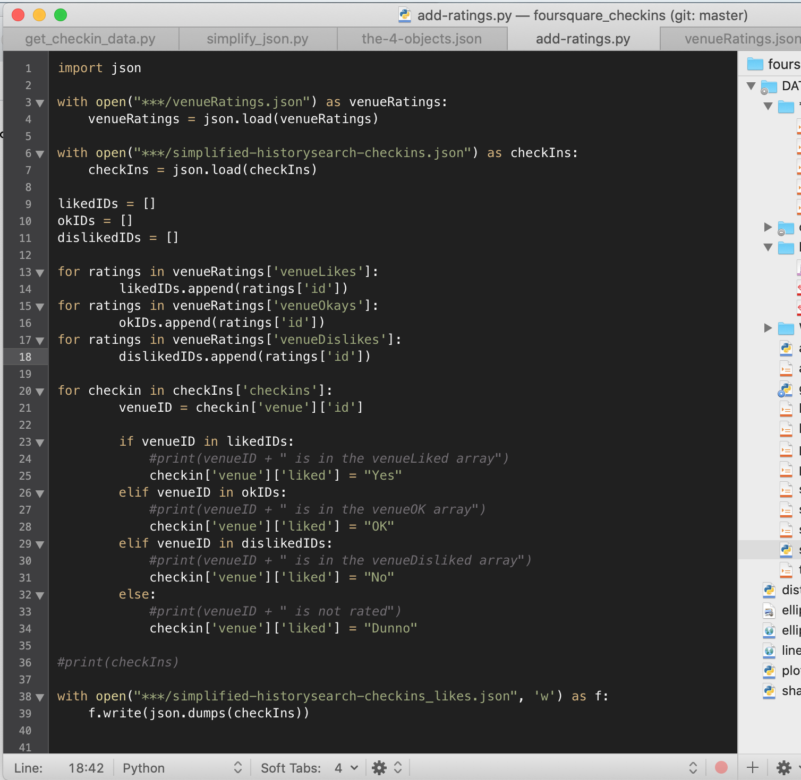

Portfolio *
I think a lot about food and places. I like making things.
I try to map out health behaviors, relationships and goals. 
With  I design and test a flavor pairing interface.
I design and test a flavor pairing interface.
Finally, for fun, I create self-portraits based on data.  ², visualizes places I've been to in the past five years.
², visualizes places I've been to in the past five years.
☄
❶ Meal Planning. ⟶ Next Step: Questions Flowchart
README -
I'm obsessed with nutrition and health. I've used a few apps to help keep me to my goals. I started to notice though - why do meal planning and cooking apps attempt to automate so much of the planning? Are both diets undertaken AND dietician, nutritionist or doctor consulted? What kinds of interactions could participants have with chefs or other service providers?
Analysis of Current Apps
I examined 8 apps ( Chefling, Supercook, Meal Hero, Mealime, Cooklist, Paprika Recipe Manager, Eat This Much, and MyFitnessPal ).
I noted that the apps:
- ✔ Acknowledge the existence of unique diets, food intolerances and food preferences,
- ✔ Recognize the temporary, discrete nature of diet plans with a set # of days, or a calendar...
- ✔ But only some apps recognize a social element
In addition the apps had meal planning functionality that included in varying degrees:
- ✩ Items/ ingredients for a grocery list,
- ✩ A calendar for foods/recipes/meals,
- ✩ A way to update kitchen pantry,
- ✩ A way to look for, bookmarking saving recipes AND
- ✩ A way to assess the nutritional content of the meals
✂ There were so many practical improvements to make!
Ultimately though, I need to remind myself of 3 main components:
- How could I structure incentives around setting meal plans, diet plans and goals.
- What are some possible ways to connect to chefs, nutritionists/dieticians, fitness instructors, recipe developers/bloggers, other meal planners and dieters?
- FINALLY, how will the service map to other existing systems around nutrition, fitness, delivery, personal assistants, restaurants and grocery stores?
☄
❷ Food or Flavor Pairs? ⟶ Next Step: Wireframes, Usability Testing
README -
I've come across novel pairings that delight me. Who knew a popcorn creme brulee or a wasabi rice krispie could taste so fun. How brilliant is having toasted quinoa on a bed of arugula? More importantly, how can I confirm and replicate the validity of these pairings?
Turns out, there is a whole body of knowledge about what makes food delicious. This should come as no surprise. Four cookbooks I skimmed ( flavor bible, flavor matrix, spice bible, salt fat acid heat) divide food up into categories and have an elaborate set of vocabulary to describe the flavors and experience of food. Not only that, there have been more than a few analysis and tools created that showcase the different possible pairings, either through classification, or through clustering of existing recipes (ex. food ninja, ibm chef watson, food pairing).
This is a lot of information to hold in mind. Wouldn’t it be simpler to have suggested pairing combinations?
- ❈ CATEGORIES: salads / vegetables, / dessings, stocks, sauces, soups / grains pasta doughs / beans legumes, eggs, fish, meat, cheese / sweets, fruit / coffee, beer, wine
- ❈ FLAVORS: sweet, salty, sour, bitter, tangy, umami, fat, spicy, hot, almagating
- ➝ More flavor descriptors: fruity, phenol, pungent, maillard, terpene, marine, sour, savory, vegetal, alcohol, sulphur, dairy, floral
- ❈ EXPERIENCE: taste, aroma, texture, sound, appearance, temperature
- ➝ Other experience dimensions: surprise, pleasantness, synergy, affinities
Card Sorting Exercises
Objective -
To figure out how participants think of food pairing when wondering what to cook or eat.
What kind of pairings do participants expect to see on an interface?
- The average number of items paired (3?)
- The food category the item to be paired belongs to
- The level at which the food item is paired at (ie. cuisine, season, meal/time of the day, dish type, ingredients, flavors, drinks)
Participant requirements - Experience cooking, loves food, eats at restaurants, has a collection of spices at home. Looking for novel, unique food pairings. Owns a smartphone, is familiar with using middle-of-the-way apps.
...
☄
❸ ² Foursquare Checkins ⟶ Next Step: Visualize
README -
I wanted to turn some personal data into physical, tangible item.
Pulling & Organizing Checkin Data into JSON format
I used Python to pull my Foursquare check-in data from between Friday, August 8, 2014 - Saturday, November 2, 2019.
I cleaned, merged and restructured the data. The final file includes information on:
- ✔ time,
- ✔ location coordinates,
- ✔ place category,
- ✔ place name,
- ✔ whether I’d checked into the spot with a friend (who also used the app) and
- ✔ whether I liked the location.
I pulled from an API point that was no longer publicly listed in the docs. I think I found it via another project called alongside.space. The other interesting thing was that the timestamps were in Epochs, which is a Unix based timestamp.
Now I need to decide what kind of form the data should take. What colors should I use? Should I feed the data to a tool that will draw or paint something for me onto a canvas or a piece of paper? TBD.